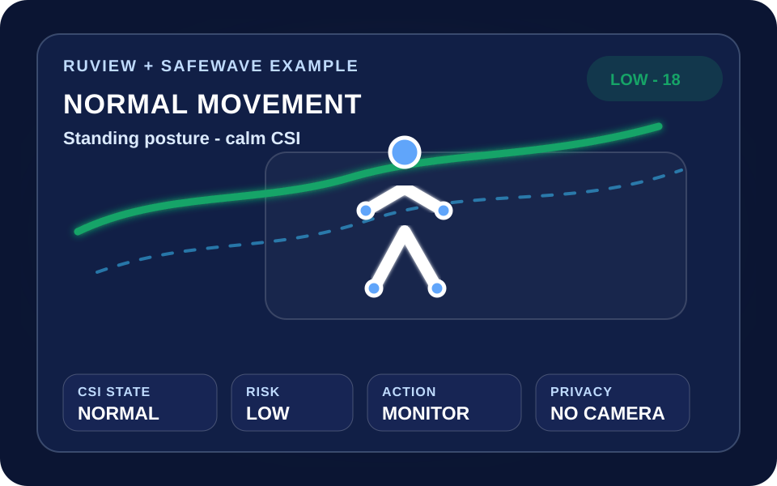

카메라 없이 · 착용 없이 · 기존 Wi‑Fi 기반
고령자 낙상·무활동 위험을 Wi‑Fi 신호 변화로 조기 확인하는 데모
SafeWave는 RuView의 Wi‑Fi CSI 공간감지 개념을 활용해 갑작스러운 신호 변화, 이후 무활동, 평소 생활 패턴 차이를 종합해 보호자 확인이 필요한 상황을 시각화합니다.
사생활 보호
착용 불필요
위험 우선순위
RuView 연동
Screen 01
실시간 안전 대시보드
시나리오를 선택하면 CSI 그래프, 위험 점수, AI 근거, 보호자 알림, 이벤트 로그가 함께 바뀝니다.
RuView 활용 포인트
RuView를 사용했을 때 상황별로 보이는 예시 이미지
실제 외부 데모 화면을 삽입하지 않고, RuView의 Wi‑Fi CSI 공간감지 결과를 SafeWave 대시보드에서 어떻게 해석해 보여줄지 예시 이미지로 구성했습니다. 상황 버튼을 누르면 대표 이미지와 위험 문구가 함께 바뀝니다.
Wi‑Fi CSI 공간 감지
카메라 없는 움직임 추정
낙상/무활동 상태 시각화
RUVIEW EXAMPLE IMAGE
평상시 움직임

완만한 CSI 파형과 서있는 포즈가 표시되고, 보호자 알림은 보류됩니다.
Wi‑Fi CSI 시뮬레이션
신호 변화량 · 이상 피크 하이라이트
평상시 움직임: 완만한 신호 변화, 위험 점수 18점.
CSI 변화량
이상 피크
무활동 구간
상황별 표시 예시
어떤 상황에는 앱과 대시보드에 어떻게 뜨나요?
각 상황을 누르면 위 그래프와 보호자 앱 알림이 같은 내용으로 즉시 바뀝니다.
AI 판단 근거
왜 이 점수가 나왔나
확정 진단이 아닌 “확인 필요” 알림
현재는 평상시 움직임으로 보입니다. 정기 모니터링을 유지합니다.
대시보드 로그
Screen 02
보호자·돌봄 담당자 알림 앱
보호자와 돌봄 담당자가 앱을 설치한 뒤 위험 알림을 수신하고, 상태 확인과 대응을 진행하는 화면입니다.
보호자 알림
거실 · Wi‑Fi CSI node 02
평상시 움직임
현재는 평상시 움직임으로 보입니다. 정기 모니터링을 유지합니다.
위험 점수18
무활동2분
패턴 차이8%
확인 플로우
상황을 선택하면 권장 대응이 표시됩니다.
최근 알림
Screen 03
보고서 한눈에 보기
문제 근거, 작동 구조, 차별점, 기대효과를 한 화면에서 심사자가 빠르게 이해하도록 정리했습니다.
2026년 5월 전국 고령인구비율. 전남 29.0%, 경북 28.2%, 강원 27.5% 등 일부 지역은 더 높습니다.
2024년 전국 독거노인가구비율. 혼자 생활할수록 사고 발견 지연 위험이 커집니다.
65–69세부터 90세 이상까지 연령이 높아질수록 낙상 경험률이 증가합니다.
SafeWave 시스템 구조
Wi‑Fi CSI → 전처리 → AI 분류 → 위험 점수 → 보호자 알림
01CSI 수집
사람의 움직임으로 달라지는 Wi‑Fi 반사·감쇠·위상 변화를 기록
02특징 추출
평균, 최대 변화량, 분산, 급격한 피크, 이후 움직임 감소 계산
03AI 분류
평상시, 휴식, 장시간 무활동, 낙상/쓰러짐 의심, 야간 이상 움직임
04위험 통합
0–100점으로 낮음·주의·위험 단계 표시
05확인 요청
보호자·돌봄 담당자에게 확인 필요 알림 전송
감시가 아니라, 사생활을 지키는 안전 신호
카메라 없음
침실·화장실 근처처럼 민감한 공간에도 부담을 줄입니다.
웨어러블 없음
충전, 착용, 버튼 조작에 의존하지 않습니다.
기존 Wi‑Fi 활용
저가 CSI 노드와 기존 무선 환경으로 확장 가능성이 큽니다.
낙상 전후까지 관찰
단순 순간 피크가 아니라 이후 무활동과 생활 패턴 차이를 함께 봅니다.
RuView-ready
RuView의 존재·활동·낙상·생체 신호 감지 계층을 안전 UX로 연결합니다.
CCTV·스마트워치·응급버튼의 빈틈 보완
| 방식 | 한계 | SafeWave 보완 |
|---|---|---|
| CCTV | 영상 사생활 부담 | 신호 변화만 사용 |
| 스마트워치 | 미착용·방전 가능 | 공간 기반 자동 감지 |
| 응급버튼 | 직접 눌러야 함 | 위험 의심 자동 알림 |
| 단순 움직임 센서 | 맥락 판단 부족 | 무활동·시간대·패턴 통합 |
사고 발견 지연을 줄이고, 독립적인 생활을 더 안전하게
고령자
계속 촬영되거나 기기를 착용하지 않아도 안전 보조를 받을 수 있습니다.
보호자
모든 순간을 감시하지 않고 필요한 상황에 집중할 수 있습니다.
지역사회
독거노인 안전 확인과 돌봄 인력 대응 우선순위에 도움을 줍니다.